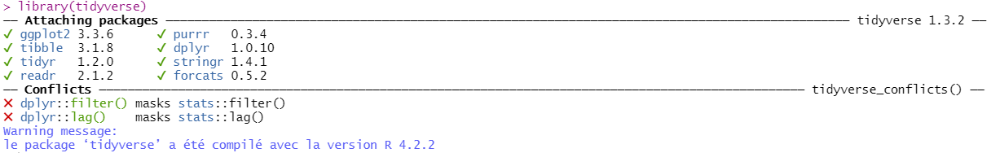

# Installer et charger les packages readr et dplyr
install.packages(c("readr", "dplyr"))
library(readr)
library(dplyr)
# Installer et charger la suite Tidyverse
install.packages("tidyverse")
library(tidyverse)Ce tutoriel est adapté de Basic data manipulation et Efficient data manipulation du site Our Coding Club.
Introduction
Qu’est-ce que le Tidyverse ?
Le Tidyverse est un ensemble de packages proposant de multiples fonctions utiles à l’ensemble des étapes d’une analyse :
| readr | importer et exporter les données |
| tibble | format de tableau propre au tidyverse |
| dplyr | manipuler les données |
| tidyr | transformer des tableaux |
| stringr | manipuler des chaînes de caractères |
| forcats | manipuler des variables catégorielles |
| ggplot2 | représenter les données |
| purrr | programmation fonctionnelle |
| lubridate | manipuler des dates |
Pré-requis
Si vous n’avez pas suivi les autres tutoriels, vous pouvez créer un projet RStudio et une arborescence.
Pour utiliser le Tidyverse, vous pouvez soit installer et charger séparément les packages dont vous aurez besoin, soit installer et charger directement la suite complète :
Les conflits
Lorsque vous exécutez la fonction library(tidyverse), le message suivant s’affiche dans la console :

R vous indique :
- le nom et la version des packages individuels (Attaching packages)
- les fonctions portant des noms identiques existant dans d’autres packages (Conflicts)
Il existe par exemple une fonction filter() dans le package stats. Si vous souhaitez utiliser cette dernière fonction plutôt que celle proposée dans le package dplyr, il vous foudra préciser le package en question : stats::filter().
Premiers pas dans le Tidyverse
Les fonctions proposées dans les différents packages de la suite Tidyverse sont - en règle générale - nommées d’après les actions qu’elles accomplissent, ce qui rend leur mémorisation plus simple et leur utilisation plus intuitive.
Importer les données
Nous allons utiliser le même jeu de données que dans les tutoriels précédents (vous pouvez le télécharger ici et le sauvegarder dans votre dossier raw/).
Pour importer les données, nous utilisons la fonction read_csv(), à ne pas comprendre avec la fonction read.csv() utilisée précédemment.
pingouins <- readr::read_csv(file = "raw/pingouins.csv")Vous pouvez voir dans la console des informations concernant vos données :
- les dimensions du tableau
- le séparateur de colonnes
- les types et les noms des variables
Tapez pingouins dans la console et appuyze sur Entrée : vos données s’affichent et vous pouvez voir qu’il s’agit d’un tibble, qui présente quelques particularités par rapport à un tableau “classique” :
- les dimensions du tibble sont précisées
- les types des variables sont indiquées sous les noms des colonnes
- seules les dix premières lignes sont affichées
- le nombre de colonnes affichées dépend de la largeur de l’écran
- les noms de colonnes sont raccourcis si nécessaire
- les données manquantes NA sont mises en évidence
Pour bien voir la différence entre un tibble et un data.frame, comparez les deux commandes suivantes :
pingouins
as.data.frame(pingouins)Explorer les données
Plusieurs fonctions incluses dans R permettent d’explorer rapidement des données pour s’assurer qu’elles ont été correctement importées :
# Afficher les premieres lignes
head(pingouins)
# Afficher les dernieres lignes
tail(pingouins)
# Afficher la structure des donnees
str(pingouins)La fonction glimpse() (du package readr) retourne sensiblement les mêmes informations que la fonction str() :
dplyr::glimpse(pingouins)Créer une copie de travail
La première chose à faire avant de manipuler, modifier et transformer nos données est de créer une copie de travail : cela nous permettra, en cas d’erreur, de repartir des données d’origines.
pingouins_tmp <- pingouinsRenommer des colonnes
Commençons par renommer des colonnes afin de respecter les conventions d’écriture :
- snake_case : caractères minuscules, mots séparés par des
_
- camelCase : aucune séparation entre les mots, majuscule pour débuter un mot
La fonction rename s’utilise de la façon suivante : rename(data, nouveau nom = ancien nom)
dplyr::rename(pingouins_tmp, ile = Ile)Nous pourrions procéder de la même façon pour plusieurs colonnes à la fois :
dplyr::rename(pingouins_tmp, espece = Espece, ile = Ile)Le package janitor est dédié au nettoyage d’un tableau (noms de colonnes, suppression des doublons, …). Utilisons la fonction clean_names() de ce package :
janitor::clean_names(pingouins_tmp)Assignons ces noms de colonnes nettoyés à notre copie de travail :
pingouins_tmp <- janitor::clean_names(pingouins_tmp)Assurons-nous que les noms de colonnes ont bien été modifiés :
names(pingouins_tmp)
Explorer les arguments d’une fonction
Pour afficher l’aide de la fonction clean_names, tapez ?clean_names (ou ?janitor::clean_names) dans la console. Vous trouverez dans l’aide toutes les informations concernant une fonction. Dans notre cas, nous pourrions utiliser différentes conventions d’écriture pour nos noms de colonnes : clean_names(pingouins_tmp, case = "lower_camel") par exemple.
Sélectionner des colonnes
La fonction select() permet de sélectionner les colonnes d’un tableau. Nous allons sélectionner les colonnes espece, ile, longueur_bec_mm, hauteur_bec_mm, longueur_aile_mm et masse_corporelle_g. Nous pouvons procéder de plusieurs façons :
# Indiquer toutes les colonnes
dplyr::select(pingouins_tmp, espece, ile, longueur_bec_mm, hauteur_bec_mm,
longueur_aile_mm, masse_corporelle_g)
# Indiquer les suites de colonnes
dplyr::select(pingouins_tmp, espece:ile, longueur_bec_mm:masse_corporelle_g)
# Supprimer des colonnes
dplyr::select(pingouins_tmp, espece:ile, longueur_bec_mm:masse_corporelle_g)D’autres fonctions du package dplyr permettent de sélectionner des colonnes :
contains(): sélectionner les noms de colonnes qui contiennent un motif
starts_width(): sélectionner les noms de colonnes qui commencent par un motif
ends_width(): sélectionner les noms de colonnes qui se terminent par un motif
Dans notre cas, nous pouvons sélectionner les colonnes espece et ile, puis les colonnes dont le nom se termine par mm ou par g :
# Utiliser la fonction ends_with()
dplyr::select(pingouins_tmp, espece, ile, dplyr::ends_with(c("mm", "g")))Assignons cette sélection de colonnes à notre objet :
pingouins_tmp <- dplyr::select(pingouins_tmp, espece, ile, dplyr::ends_with(c("mm", "g")))
Renommer et ré-ordonner des colonnes avec
select()
Nous pouvons utiliser la fonction select() pour renommer des colonnes :
dplyr::select(pingouins_tmp, espece:longueur_aile_mm, masse = masse_corporelle_g)Mais aussi pour modifier l’ordre des colonnes :
dplyr::select(pingouins_tmp, espece:ile, masse_corporelle_g, longueur_bec_mm:longueur_aile_mm)Enfin, si nous n’avons que quelques colonnes à déplacer, la fonction everything() permet de sélectionner le reste du tableau !
dplyr::select(pingouins_tmp, ile, dplyr::everything())Filtrer des données
La fonction filter() permet de filtrer les données à l’aide d’opérateurs logiques :
== |
strictement égal à |
<= |
inférieur ou égal à |
< |
inférieur à |
>= |
supérieur ou égal à |
> |
supérieur à |
!= |
différent de |
%in% |
appartient à |
& |
et |
| |
ou |
! |
négation |
Voici deux exemples :
# Individus vivant sur l'ile Biscoe pesant au moins 5 kgs
dplyr::filter(pingouins_tmp, ile == "Biscoe", masse_corporelle_g >= 5000)
# Individus vivant sur les iles Biscoe ou Torgersen
dplyr::filter(pingouins_tmp, ile %in% c("Biscoe", "Torgersen"))La fonction between() permet de garder les valeurs numériques entre deux bornes :
# Individus pesant entre 3 kgs et 3,5 kgs
dplyr::filter(pingouins_tmp, dplyr::between(masse_corporelle_g, 3000, 3250))Notre jeu de données contient des données manquantes NA. Il existe plusieurs manières de supprimer ces données manquantes :
# Garder les lignes pour lesquelles la variable longueur_bec_mm ne contient pas de NA
dplyr::filter(pingouins_tmp, !is.na(longueur_bec_mm))
# Supprimer les lignes pour lesquelles la variable longueur_bec_mm contient au moins un NA
tidyr::drop_na(pingouins_tmp, longueur_bec_mm)
# Supprimer les lignes contenant des NAs, quelque soit la variable
tidyr::drop_na(pingouins_tmp)Trier des données
La fonction arrange() permet de trier des données. Par défaut, le tri s’effectue par ordre croissant. Pour trier des données par ordre décroissant, il faut ajouter la fonction desc().
# Trier les données par ordre croisant de longueur de bec
dplyr::arrange(pingouins_tmp, longueur_bec_mm)
# Trier les données par ordre décroissant de masse corporelle
dplyr::arrange(pingouins_tmp, dplyr::desc(masse_corporelle_g))Il est possible de trier sur plusieurs colonnes : nous pouvons trier les individus par ordre décroissant de hauteur de bec puis par ordre décroissant de longueur de bec. Cela peut être utile pour départager des individus “ex-aequo” pour une variable :
dplyr::arrange(pingouins_tmp, dplyr::desc(hauteur_bec_mm), dplyr::desc(longueur_bec_mm))Créer ou modifier des colonnes
La fonction mutate() permet de créer une nouvelle colonne. Nous pouvons par exemple ajouter une colonne ratio_bec dans laquelle nous allons calculer le rapport entre la longueur du bec et sa hauteur :
dplyr::mutate(pingouins_tmp, ratio_bec = longueur_bec_mm / hauteur_bec_mm)Nous pouvons également modifier le contenu d’une colonne, par exemple en ajoutant le suffixe island au contenu de la colonne ile :
dplyr::mutate(pingouins_tmp, ile = paste0(ile, " island"))La fonction transmute() permet quant à elle de créer une nouvelle colonne tout en supprimant les colonnes pré-existantes :
dplyr::transmute(pingouins_tmp, masse_kgs = masse_corporelle_g / 1000)Effectuer des comptages
La fonction count() permet d’effectuer des comptages sur les variables.
Comptons le nombre d’individus par espèce :
dplyr::count(pingouins_tmp, espece)L’argument sort = TRUE permet d’afficher le résultat par ordre décroissant :
dplyr::count(pingouins_tmp, espece, sort = TRUE)Nous pouvons également compter les individus par île et par espèce :
dplyr::count(pingouins_tmp, ile, espece, sort = TRUE)Agréger des lignes
La fonction summarise() permet d’agréger des lignes en effectuant une opération.
Calculons la longueur moyenne du bec pour l’ensemble des individus, sans oublier l’argument na.rm = TRUE pour supprimer les données manquantes lors du calcul. Si nous avions assigné à l’objet pingouins_tmp les données après avoir retiré les lignes contenant des données manquantes, nous pourrions nous passer de cet argument. Dans le doute, mieux vaut ajouter cet argument :
dplyr::summarise(pingouins_tmp,
longueur_bec_mm_moy = mean(longueur_bec_mm, na.rm = TRUE))Cette fonction peut également s’utiliser sur plusieurs variables :
dplyr::summarise(pingouins_tmp,
longueur_bec_mm_moy = mean(longueur_bec_mm, na.rm = TRUE),
hauteur_bec_mm_moy = mean(hauteur_bec_mm, na.rm = TRUE))Regrouper les données
La fonction group_by(), utilisée en combinaison avec la fonction summarise(), permet de regrouper les données pour effectuer des calculs par groupe.
Calculons la longueur moyenne du bec par espece :
dplyr::summarise(group_by(pingouins_tmp, espece),
longueur_bec_mm_moy = mean(longueur_bec_mm, na.rm = TRUE))Cette fonction permet de définir des sous-groupes. Calculons la longueur moyenne du bec par île et par espèce :
dplyr::summarise(dplyr::group_by(pingouins_tmp, ile, espece),
longueur_bec_mm_moy = mean(longueur_bec_mm, na.rm = TRUE))
Dégrouper les données
La fonction ungroup() permet de dégrouper les données
“Ceci n’est pas un pipe”
Jusqu’à présent, nous avons utilisé les fonctions une par une, en créant si nécessaire des objets intermédiaires. Cette façon de procéder peut rapidement encombrer notre environnement.
Il existe une façon d’enchaîner les fonctions les unes à la suite des autres, qui présente plusieurs avantages :
- rendre le code plus clair et lisible
- réduire le nombre d’objets intermédiaires nécessaires à l’analyse
- permettre d’utiliser l’auto-complétion (à l’aide de la touche
Tab)
L’enchaînement des fonctions s’effectue à l’aide de ce que l’on appelle un pipe, disponible dans le package magrittr.

Un pipe s’écrit %>% et se place à la fin d’une ligne :
pingouins %>%
janitor::clean_names()
Raccourci clavier : le pipe
Pour insérer un pipe, utilisez la combinaison Ctrl + Shift + M
Nous pouvons ainsi enchaîner les fonctions sans avoir à créer des objets intermédiaires :
pingouins %>%
janitor::clean_names() %>%
dplyr::drop_na()
Le pipe “natif”
|>
Les versions les plus récentes de R (à partir de 4.1) proposent un pipe “natif”, qui ne nécessite pas de faire appel au package magrittr. Ce pipe s’écrit sous la forme |>.
Pour utiliser le pipe |>, cliquez sur Tools > Global Options. Dans le menu Code et l’onglet Editing,cochez la case Use native pipe operator.

Le raccourci clavier Ctrl + Shift + M insérera alors un pipe |>.
Manipuler des chaînes de caractères
Le package stringr est dédié à la manipulation de chaînes de caractères. Nous aimerions séparer la colonne espece en deux colonnes :
- une colonne contenant le nom de l’espèce (Adelie par exemple)
- une colonne contenant le nom latin de l’espèce (Pygoscelis adeliae)
La fonction str_detect() permet de rechercher un motif dans une chaîne de caractères :
stringr::str_detect(string = pingouins_tmp$espece, pattern = "Adelie")Utilisons la fonction word() pour extraire les troisèmes et quatrièmes mots de la variable espèce. Cette fonction s’utilise de la manière suivante : str_word(chaine, debut, fin).
pingouins_tmp <- pingouins_tmp %>%
dplyr::mutate(nom_latin = stringr::word(string = espece,
start = 3, end = 4))Notre nouvelle variable nom_latin a bien été créée, mais elle contient des parenthèses. Pour les supprimer, nous utilisons la fonction str_remove_all() en combinaison avec une expression régulière (regex) : les parenthèses à supprimer sont placées entre crochets, eux-mêmes placés entre des guillemets.
pingouins_tmp <- pingouins_tmp %>%
dplyr::mutate(nom_latin = stringr::str_remove_all(string = nom_latin,
pattern = "[()]"))Il ne nous reste plus qu’à modifier la variable espece afin de ne conserver que le premier mot, puis de modifier l’ordre des colonnes :
pingouins_tmp <- pingouins_tmp %>%
dplyr::mutate(espece = stringr::word(string = espece,
start = 1, end = 1)) %>%
dplyr::select(espece, nom_latin, dplyr::everything())Exportons maintenant nos données nettoyées à l’aide de la fonction write_csv() :
write_csv(pingouins_tmp, "data/pinggouins_propre.csv")
Les expressions régulières
Pour en savoir plus sur les expressions régulières, vous pouvez lire cet article. Il existe souvent plusieurs façons d’arriver au même résultat. Pour le nom latin, nous aurions pu extraire la chaîne de caractères située entre les parenthèses :
stringr::str_extract(pingouins$Espece, "(?<=\\().+?(?=\\))")Pour extraire le nom de l’espèce, nous pouvons utiliser une expression régulière pour extraire les caractères précédent le premier espace vide :
stringr::str_extract(pingouins$Espece, "\\w+")Joindre des tableaux
Le package dplyr propose plusieurs fonctions pour joindre deux tableaux. Les lignes des deux tableaux seront associées en fonction de clés, c’est-à-dire des colonnes communes.
Le schéma ci-dessous (tiré du livre R for Data Science) représente les différentes fonctions ..._join() :

Pour bien comprendre ces différentes fonctions, nous allons créer deux sous-ensembles de données :
d1: lignes 1 à 3 du tableau, variable longueur_bec_mm
d2: lignes 2 à 4 du tableau, variable hauteur_bec_mm
Nous commençons par ajouter une colonne contenant les numéros de ligne, à l’aide de la fonction rowid_to_column() du package tibble. Par défaut, cette fonction la colonne d’index au début du tableau, et l’argument var = permet de choisir le nom de cette colonne. La fonction slice() permet de créer un sous-ensemble de lignes à l’aide de leurs positions.
d1 <- pingouins_tmp %>%
tibble::rowid_to_column(var = "ind_num") %>%
dplyr::select(ind_num, longueur_bec_mm) %>%
dplyr::slice(1:3)
d2 <- pingouins_tmp %>%
tibble::rowid_to_column(var = "ind_num") %>%
dplyr::select(ind_num, hauteur_bec_mm) %>%
dplyr::slice(2:4)inner_join(d1, d2) |
|
full_join(d1, d2) |
 |
left_join(d1, d2) |
 |
right_join(d1, d2) |
 |
anti_join(d1, d2) |
|
anti_join(d2, d1) |
Les clés de jointure
La colonne commune porte le même nom dans nos deux tableaux d1 et d2. Si ce n’était pas le cas, nous devrions préciser la clé de jointure. Dans ce cas, la colonne de jointure du tableau résultant prendra le nom de cette colonne dans le premier tableau :
names(d1) <- "numero_ind"
inner_join(d1, d2, by = c("numero_ind" = "ind_num"))Transformer des tableaux
La suite de packages tidyverse se base sur le principe des tidy data :
- chaque variable est située dans sa propre colonne
- chaque observation est située sur sa propre ligne
- chaque valeur est située dans sa cellule
Ces trois principes sont résumés dans la figure suivante, tirée de R for Data Science :

Le package tidyr proprose des fonctions permettant de transformer un tableau dans un format tidy. Nos données étant déjà dans ce format, nous allons créer un sous-ensemble de données pour les transformer dans un format non-tidy puis les transformer à nouveau dans un format tidy.
Ce sous-ensemble contient les dix premières lignes du tableau et les variables espece et ratio_bec (nous ajoutons également un index des lignes)
d3 <- pingouins_tmp %>%
tibble::rowid_to_column(var = "ind_num") %>%
dplyr::select(ind_num, espece, ratio_bec) %>%
dplyr::slice(1:10)Nos données sont dans ce que l’on appelle également un format long. Pour les transformer dans un format non-tidy ou encore format large, nous utilisons la fonction pivot_wider().
Deux arguments sont obligatoires :
names_from: colonne qui servira à nommer les colonnes dans le tableau au format large
values_from: colonne qui contient les valeurs qui nous intéressent
tidyr::pivot_wider(data = d3,
names_from = ind_num,
values_from = ratio_bec)Pour rendre les noms des colonnes plus facilement utilisables et supprimer les “", nous ajoutons un l'argumentnames_prefix` :
tidyr::pivot_wider(data = d3,
names_from = ind_num,
names_prefix = "ind",
values_from = ratio_bec)Assignons ce tableau transformé au format large dans un objet :
d3_wide <- tidyr::pivot_wider(data = d3,
names_from = ind_num,
names_prefix = "ind",
values_from = ratio_bec)La fonction pivot_longer() va nous permettre de revenir dans un format tidy (long). Nous utilisons les arguments suivants :
cols: colonnes du format large à regrouper
names_to: nom de la colonne dans laquelle seront regroupés les noms des colonnes indiqués danscols
names_prefix: préfixe à supprimervalues_to: nom de la colonne qui contiendra les valeurs
tidyr::pivot_longer(data = d3_wide,
cols = -espece,
names_to = "ind_num",
names_prefix = "ind",
values_to = "ratio_bec")Le format tidy facilite les analyses en permettant de filtrer les données, de les regrouper, …
Défi
L’exercice suivant vous permettra de revoir l’utilisation de l’ensemble des fonctions abordées dans ce tutoriel.
Une solution est proposée en-dessous, ne la regardez pas avant d’avoir essayé ! Et gardez à l’esprit qu’il existe souvent plusieurs manières d’obtenir le même résultat.
Le jeu de données gapminder contient les données d’espérance de vie (lifeExp), de population (pop) et de PIB par habitant (gdpPercap) pour 142 pays entre 1952 et 2007.
# Installer et charger le package gapminder ----
install.packages("gapminder")
library(gapminder)
# Exploration rapide des données ----
# Compter le nombre de pays par continent ----
# Attention, il y a un piège, voire deux !
# Calculer le PIB global et l'ajouter dans une colonne ----
# Transformer les données d'espérance de PIB global au format long (une année par colonne) ----
# Calculer la moyenne de l'espérance de vie en 2007 par continent et trier les résultats par ordre décroissant ----